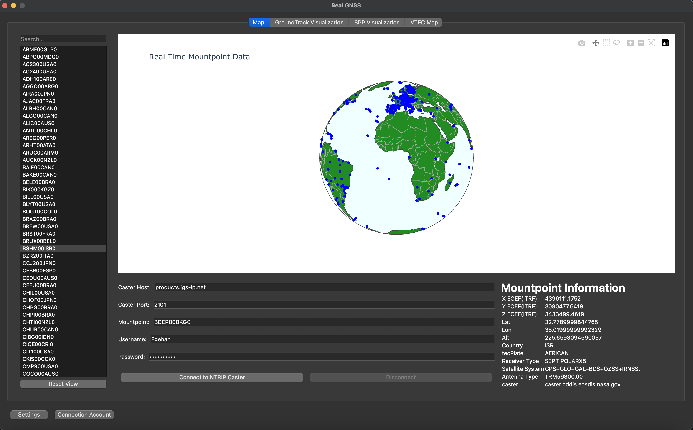
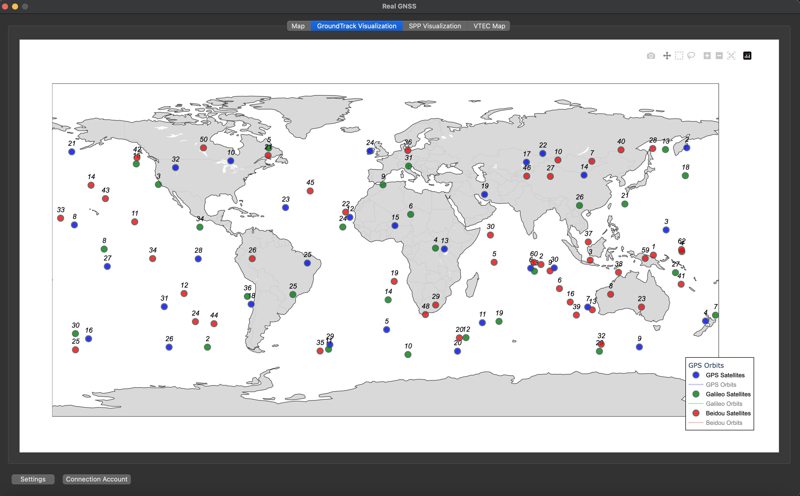
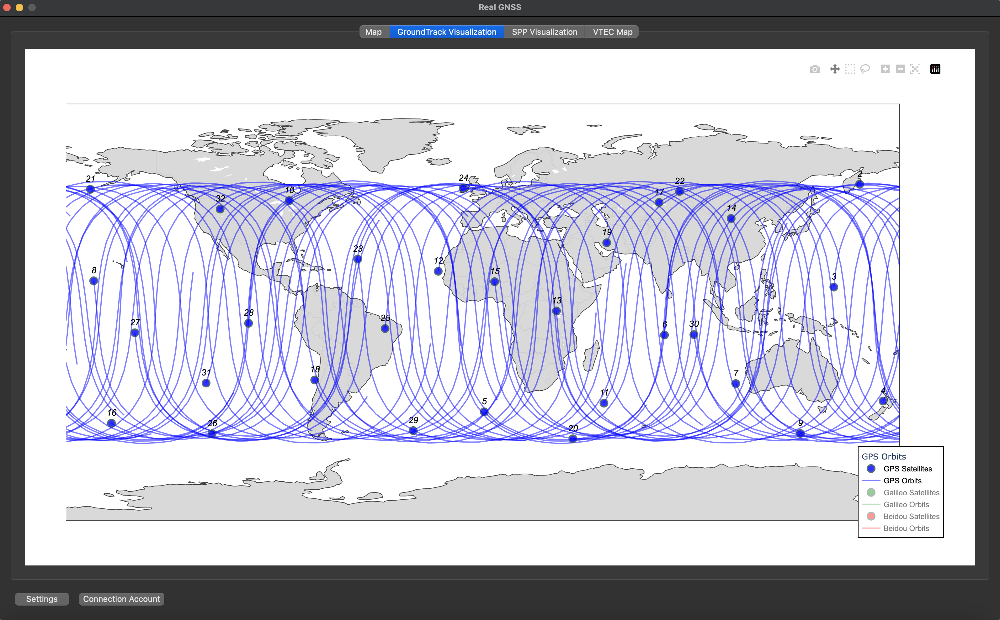
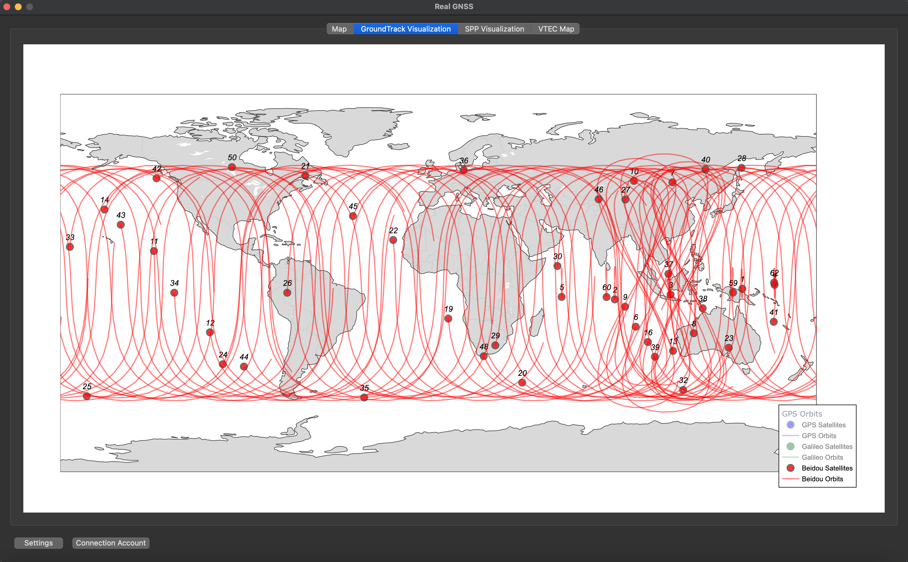
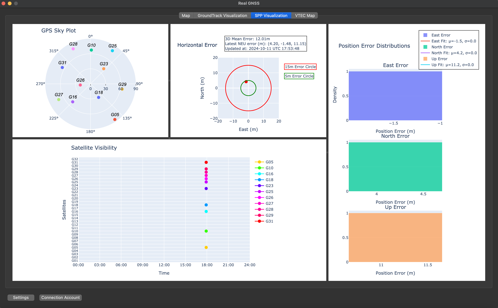
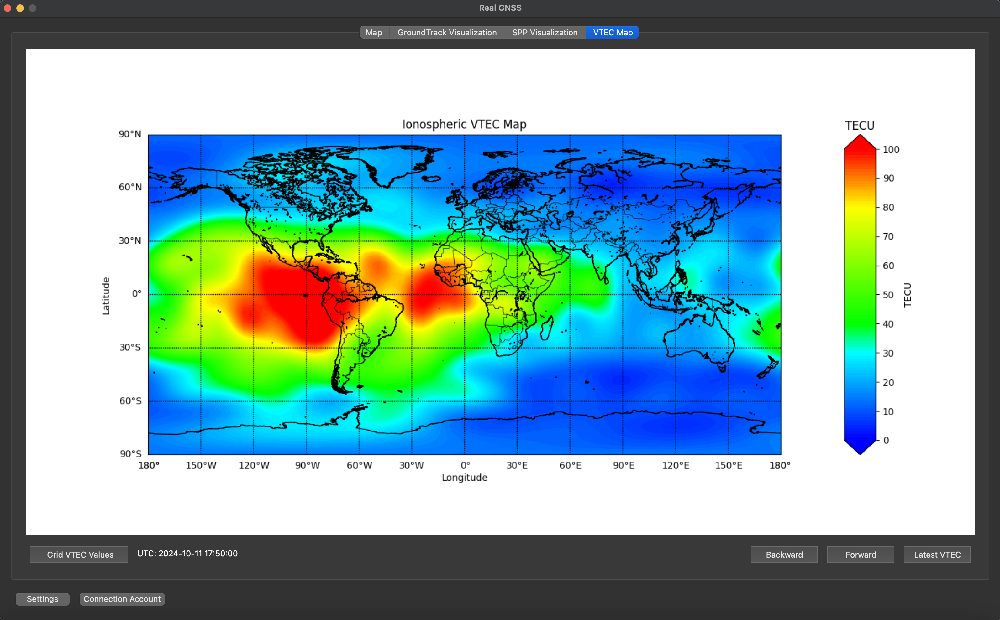
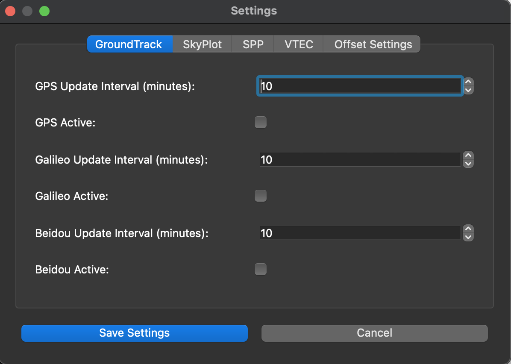
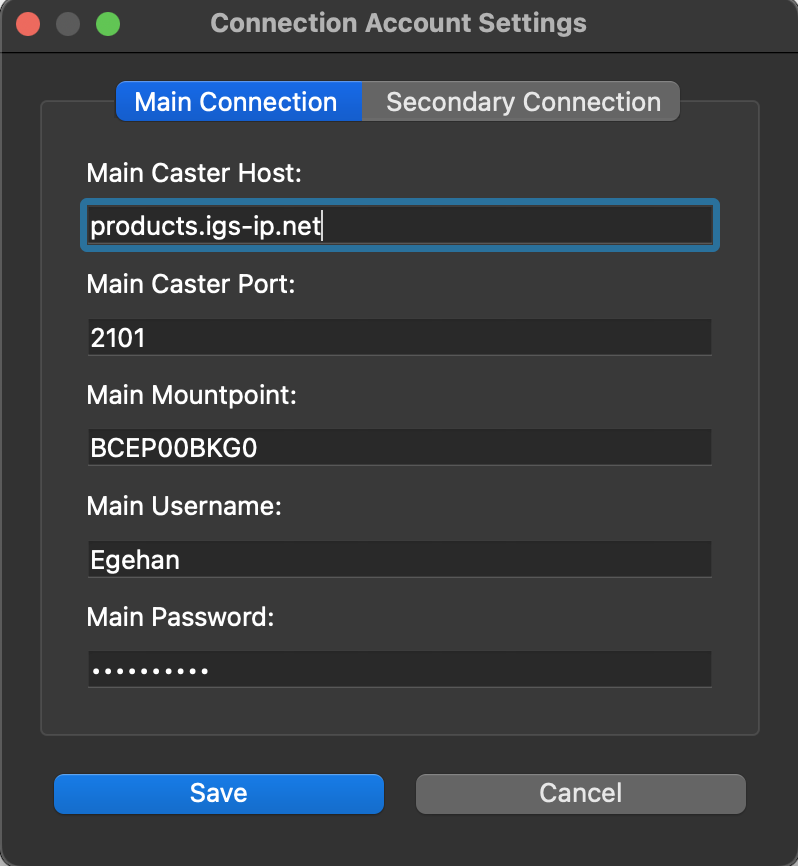
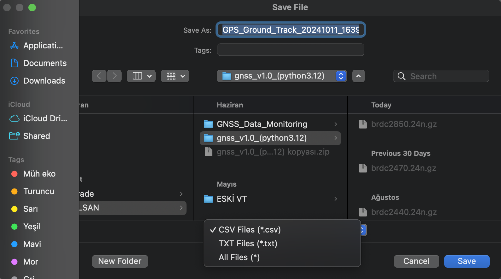

Real Time GNSS Data Monitoring Application
This project demonstrates real-time monitoring and visualization of GNSS data using advanced techniques. There are several features, Real time Ground Track Map, Skyplot, SPP, Ionospheric VTEC Map.All data types can be saved for further analysis these files can be a txt or csv format. Main work flow It connects a NTRIP Client and take the binary data. This data parsed via external libraries and user can be setting all the features etc. features on-off, update times, data saves. It took 1 year for total development. For more details and explanations click the image circle.









Other Projects
Other projects may add if I have any time for it!